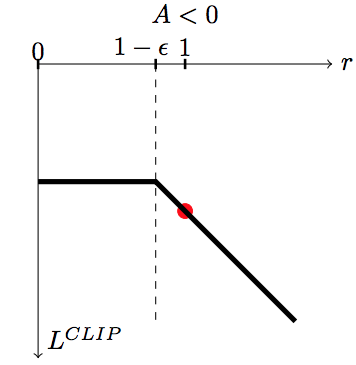

Trust region optimization searches in the neighborhood of the current parameters \theta which new value would maximize the return the most.
This is a constrained optimization problem: we still want to maximize the return of the policy, but by keeping the policy as close as possible from its previous value.
The size of the neighborhood determines the safety of the parameter change.
In safe regions, we can take big steps. In dangerous regions, we have to take small steps.
Problem: how can we estimate the safety of a parameter change?
2 - TRPO: Trust Region Policy Optimization
TRPO: Trust Region Policy Optimization
We want to maximize the expected return of a policy \pi_\theta, which is equivalent to maximizing the Q-value of every state-action pair visited by the policy:
Let’s note \theta_\text{old} the current value of the parameters of the policy \pi_{\theta_\text{old}}.
We search for a new policy \pi_\theta with parameters \theta which is always better than the current policy, i.e. where the Q-value of all actions is higher than with the current policy:
\max_\theta \, \mathcal{L}(\theta) = \mathbb{E}_{s \sim \rho_\theta, a \sim \pi_\theta} [Q_\theta(s, a) - Q_{\theta_\text{old}}(s, a)]
The quantity
A^{\pi_{\theta_\text{old}}}(s, a) = Q_\theta(s, a) - Q_{\theta_\text{old}}(s, a)
is the advantage of taking the action (s, a) and thereafter following \pi_\theta, compared to following the current policy \pi_{\theta_\text{old}}.
TRPO: Trust Region Policy Optimization
If we can estimate the advantages and maximize them, we can find a new policy \pi_\theta with a higher return than the current one.
\mathcal{L}(\theta) = \mathbb{E}_{s \sim \rho_\theta, a \sim \pi_\theta} [A^{\pi_{\theta_\text{old}}}(s, a)]
By definition, \mathcal{L}(\theta_\text{old}) = 0, so the policy maximizing \mathcal{L}(\theta) has positive advantages and is better than \pi_{\theta_\text{old}}.
Maximizing the advantages ensures monotonic improvement: the new policy is always better than the previous one. Policy collapse is not possible!
TRPO: Trust Region Policy Optimization
The problem is that we have to take samples (s, a) from \pi_\theta: we do not know it yet, as it is what we search. The only policy at our disposal to estimate the advantages is the current policy \pi_{\theta_\text{old}}.
We could use importance sampling to sample from \pi_{\theta_\text{old}}, but it would introduce a lot of variance:
the new policy \pi_{\theta_\text{new}} should not be (very) different from \pi_{\theta_\text{old}}.
the importance sampling weight \frac{\pi_{\theta_\text{new}}(s, a)}{\pi_{\theta_\text{old}}(s, a)} will not be very different from 1, so we can omit it.
If the new policy is not very different from the current one, we can sample the states from \pi_{\theta_\text{old}} without needing importance sampling:
\mathcal{L}(\theta) = \mathbb{E}_{s \sim \rho_{\theta_\text{old}}, a \sim \pi_{\theta}} [A^{\pi_{\theta_\text{old}}}(s, a)]
TRPO: Trust Region Policy Optimization
TRPO takes a constrained optimization approach (Lagrange optimization):
but the parameters \theta are much closer to the optimal parameters \theta^*.
The version with a soft constraint necessitates a prohibitively small learning rate in practice.
The implementation of TRPO uses the hard constraint with Lagrange optimization, what necessitates using conjugate gradients optimization, the Fisher Information matrix and natural gradients: very complex to implement…
However, there is a monotonic improvement guarantee: the successive policies can only get better over time, no policy collapse!
3 - PPO: Proximal Policy Optimization
PPO: Proximal Policy Optimization
In order to avoid sampling action from the unknown policy \pi_\theta, we can use importance sampling with the current policy:
\mathcal{L}(\theta) = \mathbb{E}_{s \sim \rho_{\theta_\text{old}}, a \sim \pi_{\theta_\text{old}}} [\rho(s, a) \, A^{\pi_{\theta_\text{old}}}(s, a)]
with \rho(s, a) = \dfrac{\pi_{\theta}(s, a)}{\pi_{\theta_\text{old}}(s, a)} being the importance sampling weight.
But the importance sampling weight \rho(s, a) introduces a lot of variance, worsening the sample complexity.
Is there another way to make sure that \pi_\theta is not very different from \pi_{\theta_\text{old}}, therefore reducing the variance of the importance sampling weight?
PPO: Proximal Policy Optimization
The solution introduced by PPO is simply to clip the importance sampling weight when it is too different from 1:
\mathcal{L}(\theta) = \mathbb{E}_{s \sim \rho_{\theta_\text{old}}, a \sim \pi_{\theta_\text{old}}} [\min(\rho(s, a) \, A^{\pi_{\theta_\text{old}}}(s, a), \text{clip}(\rho(s, a), 1-\epsilon, 1+\epsilon) \, A^{\pi_{\theta_\text{old}}}(s, a))]
For each sampled action (s, a), we use the minimum between:
the TRPO unconstrained objective with IS \rho(s, a) \, A^{\pi_{\theta_\text{old}}}(s, a).
the same, but with the IS weight clipped between 1-\epsilon and 1+\epsilon.
PPO: Proximal Policy Optimization
If the advantage A^{\pi_{\theta_\text{old}}}(s, a) is positive (better action than usual) and:
the IS is higher than 1+\epsilon, we use (1+\epsilon) \, A^{\pi_{\theta_\text{old}}}(s, a).
otherwise, we use \rho(s, a) \, A^{\pi_{\theta_\text{old}}}(s, a).

If the advantage A^{\pi_{\theta_\text{old}}}(s, a) is negative (worse action than usual) and:
the IS is lower than 1-\epsilon, we use (1-\epsilon) \, A^{\pi_{\theta_\text{old}}}(s, a).
otherwise, we use \rho(s, a) \, A^{\pi_{\theta_\text{old}}}(s, a).
PPO: Proximal Policy Optimization
This avoids changing too much the policy between two updates:
Good actions (A^{\pi_{\theta_\text{old}}}(s, a) > 0) do not become much more likely than before.
Bad actions (A^{\pi_{\theta_\text{old}}}(s, a) < 0) do not become much less likely than before.
PPO: Proximal Policy Optimization
The PPO clipped objective ensures than the importance sampling weight stays around one, so the new policy is not very different from the old one. It can learn from single transitions.
\mathcal{L}(\theta) = \mathbb{E}_{s \sim \rho_{\theta_\text{old}}, a \sim \pi_{\theta_\text{old}}} [\min(\rho(s, a) \, A^{\pi_{\theta_\text{old}}}(s, a), \text{clip}(\rho(s, a), 1-\epsilon, 1+\epsilon) \, A^{\pi_{\theta_\text{old}}}(s, a))]
It also has the monotonic improvement guarantee if \epsilon is chosen correctly.
The advantage of an action can be learned using any advantage estimator, for example the n-step advantage:
The agents are trained by self-play. Each worker plays against:
the current version of the network 80% of the time.
an older version of the network 20% of the time.
Reward is hand-designed using human heuristics:
net worth, kills, deaths, assists, last hits…
The discount factor \gamma is annealed from 0.998 (valuing future rewards with a half-life of 46 seconds) to 0.9997 (valuing future rewards with a half-life of five minutes).
Coordinating all the resources (CPU, GPU) is actually the main difficulty:
Kubernetes, Azure, and GCP backends for Rapid, TensorBoard, Sentry and Grafana for monitoring…
4 - Maximum Entropy RL - SAC
Hard RL
All methods seen so far search the optimal policy that maximizes the return:
This new objective function defines the maximum entropy RL framework.
The entropy of the policy regularizes the objective function: the policy should still maximize the returns, but stay as stochastic as possible depending on the parameter \alpha.
Entropy regularization can always be added to PG methods such as A3C.
It is always possible to fall back to hard RL by setting \alpha to 0.
Entropy of a policy
A deterministic (greedy) policy has zero entropy, the same action is always taken: exploitation.
A random policy has a high entropy, you cannot predict which action will be taken: exploration.
Maximum entropy RL embeds the exploration-exploitation trade-off inside the objective function instead of relying on external mechanisms such as the softmax temperature.
Soft Actor-Critic (SAC)
Soft Actor-Critic (SAC) is an off-policy actor-critic architecture for maximum entropy RL:
The enhanced exploration strategy through maximum entropy RL allows to learn robust and varied strategies that can cope with changes in the environment.